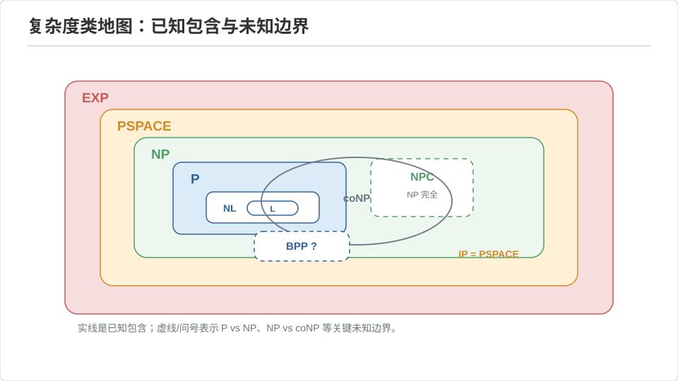
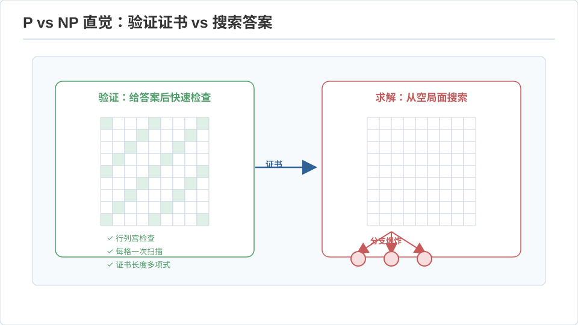

计算理论 II · 复杂度理论
对标：Sipser 第 7–10 章 / Arora–Barak Computational Complexity ｜ 前置：toc-01、algo-03（NP 归约） 可计算性问"能不能算"，复杂度理论问"要多少资源"。这一页把 P、NP 放进更大的复杂度类地图里，讲清它们的结构关系，并触及现代复杂度的深水区（随机、空间、交互、PCP）。这是一门"用资源丈量难度"的几何学。
1. 时间复杂度类与 P vs NP 的结构
- P：多项式时间可判定——"高效可解"的数学定义。
- NP：多项式时间可验证（存在多项式长证书，验证器多项式时间接受）。等价定义：非确定图灵机多项式时间。
- NP 完全：NP 中最难者（algo-03 已建），SAT 是第一个（Cook–Levin）。
- coNP：补问题在 NP（"否"有短证书）。
P vs NP：验证容易 \(\Rightarrow\) 求解容易？普遍相信 \(P\ne NP\)，但没有证明——这是克雷千禧难题，也是整个算法领域"何时该放弃找多项式算法"的信仰基础。若 \(P=NP\)：密码学崩塌、优化/AI/数学证明搜索全部平凡化——所以它不只是学术问题。
关键结构事实： - 若某个 NPC 问题 ∈ P，则 P=NP（NPC 是"多米诺骨牌的第一张"）。 - NP-中间：若 \(P\ne NP\)，存在既非 P 也非 NPC 的问题（Ladner 定理）——图同构、整数分解是疑似居民（分解的疑难正是 RSA 的安身之所，🔗 crypto-01）。 - NP \(\ne\) coNP 疑似成立：找不到 UNSAT 的短证书，这是"证明一个公式无解为什么难"的复杂度表述。
2. 空间复杂度：另一根资源轴
- L（对数空间）：\(O(\log n)\) 工作空间——只够存几个指针。图连通性 ∈ L（Reingold 定理，惊人结果）。
- PSPACE：多项式空间。关键：\(P\subseteq NP\subseteq PSPACE\)。PSPACE 完全问题的代表是量化布尔公式 QBF（\(\exists x\forall y\dots\)）与双人博弈（🔗 博弈论）——"你有必胜策略吗"通常 PSPACE 完全，比 NP 更难。
- Savitch 定理：\(NPSPACE = PSPACE\)（\(O(\log^2)\) 空间模拟非确定性）——空间上不确定性几乎免费，与时间上（P vs NP）形成戏剧性对比。
时间–空间的层级总览：
其中已知 \(P\subsetneq EXP\)（时间层级定理——更多时间严格能做更多事，用对角线证），所以这条链里至少有一处严格，但我们不知道是哪处——"链上每个 \(\subseteq\) 是否 \(\subsetneq\)"几乎全是未解之谜，复杂度理论的谦卑就在这里。

3. 随机与交互：更宽的世界
- BPP（有界错误多项式随机时间）：随机算法能高效解的类。普遍相信 \(P = BPP\)（去随机化猜想，靠伪随机生成器）——"随机性可能不增加多项式算力"，与 algo-03 里随机化的实用威力形成微妙张力：随机让算法更简单更快，但也许不改变"可解边界"。
- IP（交互证明）：验证者与全能但不可信的证明者对话。震撼定理 \(IP = PSPACE\)：通过交互 + 随机，验证者能被说服相信 PSPACE 难的事实，尽管自己算不出。
- 零知识证明（🔗 crypto-02）：证明者让验证者相信"我知道秘密"却不泄露秘密——现代密码学与区块链的引擎，根在交互证明。
PCP 定理（复杂度的珠峰）：每个 NP 证明都能改写成一种格式，验证者只随机读常数个比特就能以高概率判对错。推论：许多问题连近似都 NP 难（algo-03 的不可近似性下界全部来自这里）。这是"验证的局部性"的深刻定理。
4. 细粒度复杂度：P 内部的战争
现代算法研究的新前线：已经是多项式的问题，指数还能不能再降？ 例：编辑距离经典 \(O(n^2)\)，能否 \(O(n^{1.9})\)？细粒度归约表明——若能，则 SAT 有 \(2^{0.99n}\) 算法（违反强指数时间假设 SETH）。于是 \(O(n^2)\) 很可能是编辑距离的天花板，理由是一个关于 SAT 的猜想。这门学问给"为什么这个多项式算法快不起来"提供了 NP 理论那样的硬下界语言，是当前算法理论最活跃的方向之一。
5. 练习与要点
例 1（验证 vs 求解的直觉） 数独：填好的盘验证只需 \(O(n^2)\)，但求解一般盘是 NPC——"改卷比考试容易"就是 \(P\overset?=NP\) 的日常版。把这个直觉刻进去，很多问题的难度你能秒判。

例 2（博弈更难） 单人谜题（数独、扫雷判定）多在 NP；双人博弈（广义国际象棋、围棋的判定版）常 PSPACE 完全或更高——"对手会最优应对"这一层量词 \(\forall\) 让问题跳档。这解释了为什么博弈 AI 比谜题求解器难得多。
例 3（去随机化的赌注） 若你相信 \(P=BPP\)，那么 algo-03 里所有随机算法原则上都有等效的确定性版本——只是我们还不会写。"随机性是本质的还是仅仅方便的"至今悬而未决，这是理论与实践张力的一个漂亮缩影。\(\blacksquare\)
下一页：密码学 I——把 P vs NP 的"难"变成"安全"：对称加密、公钥与数论基础。